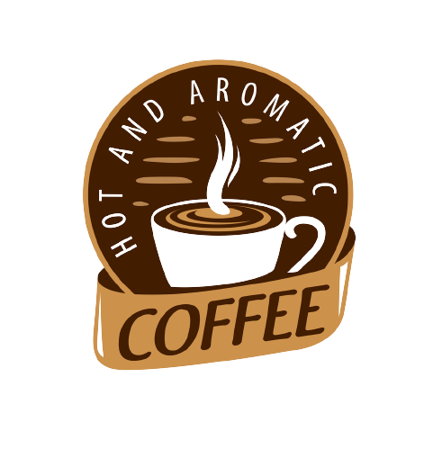
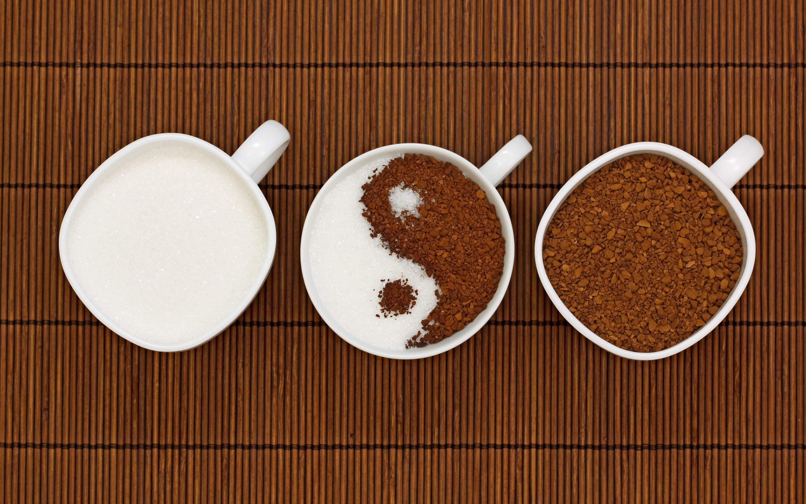

Whatsapp
|
Telefone
HOME
MENU
Sobre Nós...
Foi fundada por dois professores, Jimin Do Bitiéis e Zóio Garaio, e pelo escritor João Cock, unidos pela paixão por cafés. Comercializavam cafés de alta qualidade torrados na hora, importados do mundo todo. O diferencial da loja era sua torra que, mais escura, garantia um café mais encorpado para os clientes. A qualidade do produto. Desde que era apenas aquela pequena loja de grãos de café, a Coffee Shopp sempre buscou a excelência em seus produtos. O objetivo era oferecer o melhor do café, algo muito distante e superior àquilo que os cidadãos dos Estados Desunidos estavam acostumados.
